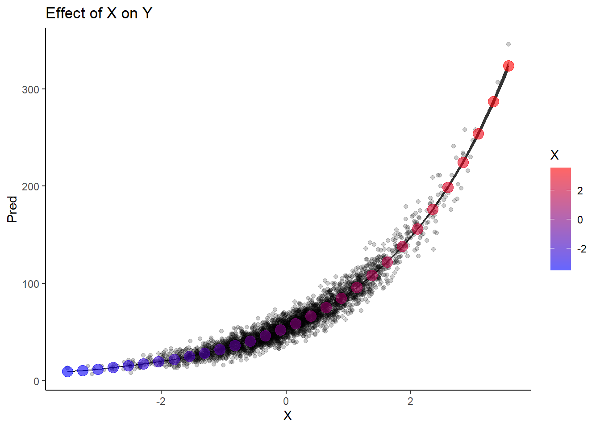

rm(list=ls()) # clear workspacelibrary(tidyverse) # data manipulation and plottinglibrary(glmmTMB) # frequentist glmmslibrary(patchwork) #multiple plotslibrary(ggdist) # nice dots in logistic regressionlibrary(tidylog) # log changes done during data wranglinglibrary(mgcv) # gammslibrary(gratia) # gam predictions
First, we will simulate data from this DAG:
INSERT DAG
Code
set.seed(333) # set seed to reproduce the simulations exactlyn <-3000# sample sizeX <-rnorm(n, 0, 1) # define K as a Z-scoreY <-rpois(n, exp(4+0.5*X)) # Y is a poisson variable whose link is the log function so defining the coefficients using the inverse log (exponential)K <-rbinom(n, size =1, prob =plogis(-3+0.03*X +0.05*Y)) # K is a Bernoulli variable whose link is the logit so defining the coefficients using the inverse logit (plogis)data <-tibble(X = X,Y = Y,K = K,K_1 =1- K)head(data)
mY_X <-glmmTMB(Y ~ X, family = poisson, data = data)summary(mY_X)
Family: poisson ( log )
Formula: Y ~ X
Data: data
AIC BIC logLik deviance df.resid
20576.1 20588.1 -10286.1 20572.1 2998
Conditional model:
Estimate Std. Error z value Pr(>|z|)
(Intercept) 3.997055 0.002606 1534 <2e-16 ***
X 0.499396 0.002281 219 <2e-16 ***
---
Signif. codes: 0 '***' 0.001 '**' 0.01 '*' 0.05 '.' 0.1 ' ' 1
Model for K
Code
mK_XY <-glmmTMB(cbind(K, K_1) ~ X + Y, family = binomial, data = data)summary(mK_XY)
Family: binomial ( logit )
Formula: cbind(K, K_1) ~ X + Y
Data: data
AIC BIC logLik deviance df.resid
3243.0 3261.0 -1618.5 3237.0 2997
Conditional model:
Estimate Std. Error z value Pr(>|z|)
(Intercept) -2.682855 0.284409 -9.433 <2e-16 ***
X 0.075036 0.133618 0.562 0.574
Y 0.045318 0.004856 9.332 <2e-16 ***
---
Signif. codes: 0 '***' 0.001 '**' 0.01 '*' 0.05 '.' 0.1 ' ' 1
Notice the p-value for X
Extract predictions of Y ~ X
Here, I use a long-winded way to compute the predictions to show how it is done
Code
#create dataframe with values of X for which we want to predict Ynew_dat_Y_X <-tibble(X =seq(from =min(data$X), to =max(data$X), length.out =30)) #predict Y but on the link scale (log) to calculate confidence intervalspred_new_dat_Y_X <-predict(mY_X, newdata = new_dat_Y_X, type ="link", se.fit =TRUE)#extract the inverse link function for the model (exponential in this case) ilink<-family(mY_X)$linkinv# bind the dataframes with values of X and the predicted Y valuespredictions_Y_X <-cbind(new_dat_Y_X,data.frame(pred_new_dat_Y_X)) %>%#calculate the confidence intervals on the log scale and exponentiatemutate(CI.up =ilink(fit + (1.96*se.fit)),CI.low =ilink(fit - (1.96*se.fit)),Pred=ilink(fit))
Plot
Code
pY_X <-ggplot() +geom_line(data = predictions_Y_X, aes(y = Pred, x = X)) +geom_ribbon(data = predictions_Y_X, aes(ymin = CI.low, ymax = CI.up, x = X)) +geom_point(data = data, aes(x = X, y = Y), alpha =0.2) +theme_classic() +labs(title ="Effect of X on Y")pY_X
Now, the conditional (direct) effect of X on K
Code
new_dat_K_X <-tibble(X =seq(from =min(data$X), to =max(data$X), length.out =30),Y =mean(data$Y)) # set y to its mean to pred_new_dat_K_X <-predict(mK_XY, newdata = new_dat_K_X, type ="link", se.fit =TRUE)ilink<-family(mK_XY)$linkinvpredictions_K_X <-cbind(new_dat_K_X,data.frame(pred_new_dat_K_X)) %>%mutate(CI.up =ilink(fit + (1.96*se.fit)),CI.low =ilink(fit - (1.96*se.fit)),Pred=ilink(fit))pK_X <-ggplot() +stat_dots(data = data,aes(y = K,x = X,side =ifelse(K_1 ==0, "bottom", "top")),size =2)+geom_line(data = predictions_K_X, aes(y = Pred, x = X)) +geom_ribbon(data = predictions_K_X, aes(ymin = CI.low, ymax = CI.up, x = X)) +theme_classic() +labs(title ="Conditional effect of X on K")pK_X
What about the conditional (direct) effect of Y on K ?
Code
new_dat_K_Y <-tibble(Y =seq(from =min(data$Y), to =max(data$Y), length.out =30),X =mean(data$X)) # set X to its meanpred_new_dat_K_Y <-predict(mK_XY, newdata = new_dat_K_Y, type ="link", se.fit =TRUE)ilink<-family(mK_XY)$linkinvpredictions_K_Y <-cbind(new_dat_K_Y,data.frame(pred_new_dat_K_Y)) %>%mutate(CI.up =ilink(fit + (1.96*se.fit)),CI.low =ilink(fit - (1.96*se.fit)),Pred=ilink(fit))pK_Y <-ggplot() +stat_dots(data = data,aes(y = K,x = Y,side =ifelse(K_1 ==0, "bottom", "top")),size =2)+geom_line(data = predictions_K_Y, aes(y = Pred, x = Y)) +geom_ribbon(data = predictions_K_Y, aes(ymin = CI.low, ymax = CI.up, x = Y)) +theme_classic() +labs(title ="Conditional effect of Y on K")pK_Y
So this is the direct effect of Y on K. But, remember that Y is caused by X so it may be of interest to see how X affects K indirectly, through Y
Code
pY_X
The first step is to select values of Y that are predicted by X
Code
COLS <-alpha(colorRampPalette(c("blue","red"))(30),0.6)pY_X +geom_point(data = predictions_Y_X, aes(y = Pred, x = X, color = X), size =4) +scale_color_gradientn(colours = COLS)

The next step is actually quite simple. We generate predictions for K as a function of the predictions of Y ~ X
new_dat_K_YX <-tibble(Y = predictions_Y_X$Pred, # predicted mean Y from XX =mean(data$X)) # set X to its mean
![]()